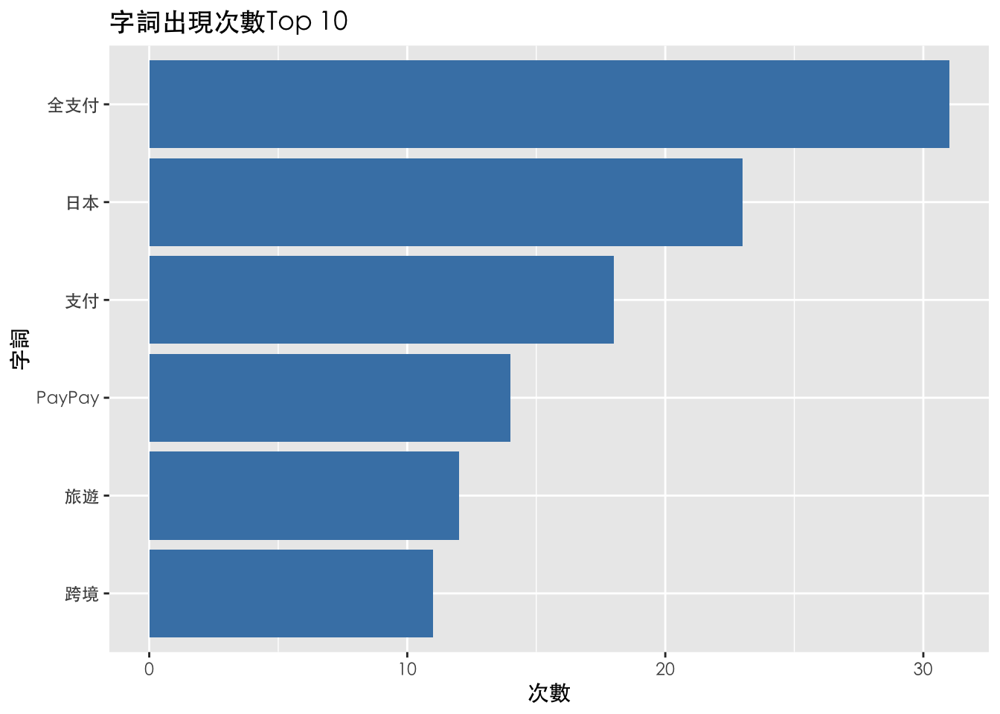

Chapter 4 文字資料
4.1 文字雲
以關鍵字「全支付」於Chrome中搜尋，以網頁排名第八「數位時代」之文章 「【圖解】全支付進軍日本，2個步驟大賺30%回饋！PayPay哪裡可刷？一文看懂怎麼用」 作為地圖雲之範例資歷，將檔案以 UTF-8 編碼 txt. 檔案格式存檔，導入R markdown 中
4.1.2 定義斷詞器
## [1] "圖解" "全" "支付" "進軍" "日本" "2"
## [7] "個" "步驟" "大" "賺" "30" "回饋"
## [13] "PayPay" "哪裡" "可刷" "一文" "看" "懂"
## [19] "怎麼" "用" "台灣民眾" "赴" "日" "旅遊"
## [25] "電子" "支付" "功能" "再" "1" "除了"
## [31] "街口" "支付" "玉山" "Wallet" "全" "支付"
## [37] "也" "宣布" "開放" "台灣" "消費者" "在"
## [43] "日本" "全" "通路" "超過" "上百萬" "家"
## [49] "的" "PayPay"( 顯示程式碼結果前50項)
4.1.3 建立新詞
從上述程式碼結果可見「全支付」三個字被拆成「全」、「支付」，因此建立「全支付」新詞 建立新詞:QRCode、藥妝店、跨境支付、市占率、
## [1] TRUE重新顯示結果前50項，已將「全支付」三個字合併為一詞
## [1] TRUE## [1] "圖解" "全支付" "進軍" "日本" "2" "個"
## [7] "步驟" "大" "賺" "30" "回饋" "PayPay"
## [13] "哪裡" "可刷" "一文" "看" "懂" "怎麼"
## [19] "用" "台灣民眾" "赴" "日" "旅遊" "電子"
## [25] "支付" "功能" "再" "1" "除了" "街口"
## [31] "支付" "玉山" "Wallet" "全支付" "也" "宣布"
## [37] "開放" "台灣" "消費者" "在" "日本" "全"
## [43] "通路" "超過" "上百萬" "家" "的" "PayPay"
## [49] "進行" "掃碼"建立其他新詞：QRCode、藥妝店、市占率、玉山Wallet、街口支付、量販店、台灣人、赴日
## [1] TRUE## [1] "圖解" "全支付" "進軍" "日本" "2"
## [6] "個" "步驟" "大" "賺" "30"
## [11] "回饋" "PayPay" "哪裡" "可刷" "一文"
## [16] "看" "懂" "怎麼" "用" "台灣民眾"
## [21] "赴日" "旅遊" "電子" "支付" "功能"
## [26] "再" "1" "除了" "街口支付" "玉山Wallet"
## [31] "全支付" "也" "宣布" "開放" "台灣"
## [36] "消費者" "在" "日本" "全" "通路"
## [41] "超過" "上百萬" "家" "的" "PayPay"
## [46] "進行" "掃碼" "付款" "台灣民眾" "前往"4.1.7 計算詞彙頻率
由大排到小，檢查前六名 可見「全支付」出現頻率最高，共有31次，促使文章在SEO排名高
## [1] TRUE TRUE## char freq
## 1 全支付 31
## 2 日本 23
## 3 支付 18
## 4 PayPay 14
## 5 旅遊 12
## 6 跨境 11利用ggplot視覺化以長條圖呈現
library(ggplot2)
top_txt_freq <- head(txt_freq)
ggplot(top_txt_freq, aes(x=reorder(char, freq), y=freq)) +
geom_bar(stat="identity", fill="steelblue") +
labs(x = "字詞", y = "次數", title = "字詞出現次數Top 10") +
coord_flip() +
theme(axis.text.x = element_text(family="STHeiti"),
axis.text.y = element_text(family="STHeiti"),
title = element_text(family="STHeiti"))

Figure 4.1: 字詞出現次數Top 10